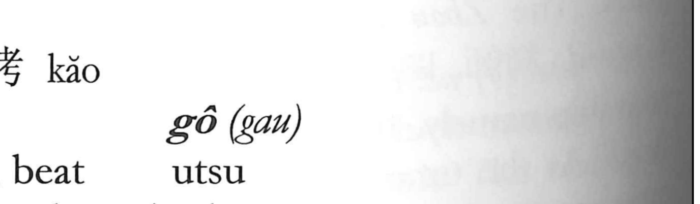

拷

Kun: | On: gou
torture ・ to beat
Explanation
拷 is a phono-semantic character: the hand element signals an act carried out with the hands, while the phonetic 考 gives the on reading gou. Although it is absent from the Shuowen, later lexica such as the Yù Pian gloss it simply as “to beat.” In practice it referred to the beating of a suspect during interrogation, and so it came to mean both striking and, more specifically, torture. The historical record mentions methods such as caning and even injuring or cutting fingers (a practice called sasshi), and from this usage derive compounds like 拷問 for torture and 拷具 for torture implements.